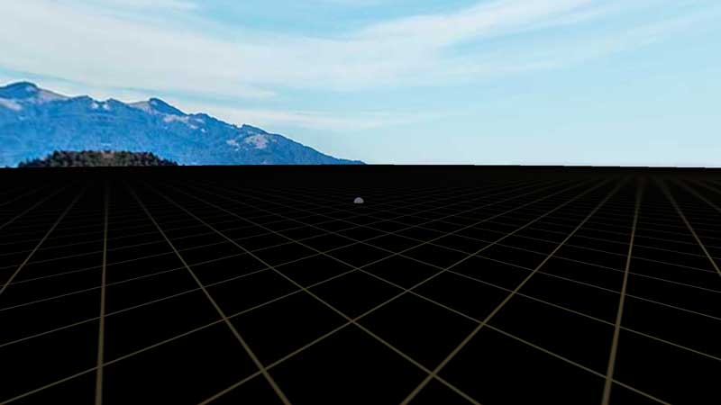

Getting started
Using Primrose to make web applications is straightforward. To start, download the `Quick Start` example project. In it, you will find files that create a basic project, showing details on how to model, setup, and run code to work with Primrose:
app.js- this is where you will write your JavaScript code to define your scene.bg.jpg- a skymap texture.deck.png- a ground texture.helvetiker_regular.typeface.js- a font for 3D text elements.index.html- an HTML file to pull it all together.Primrose.min.js- the Primrose framework, with dependencies included.- run one of the following scripts to setup a local web server and automatically start your browser
StartHere-LINUX.sh- for LinuxStartHere-MACOS.exe- for macOSStartHere-WINDOWS.exe- for Windows
webvr-bootstrapper.min.js- a minimal file for getting the page loaded quickly, display a loading progress bar, and abstract regular full-screen view as a display option alongside WebVR.wind.ogg- some ambient noise for aiding in orienting one's self in the space.
In the app.js file, you'll find the relevant scripts to edit to make your own VR applications. The template project starts out fairly empty.
grammar("JavaScript");
var app = new Primrose.BrowserEnvironment({
skyTexture: "bg.jpg",
groundTexture: "deck.png"
} );
app.addEventListener( "ready", function () {
// Perform any post-initialization setup. Once this event fires, the Primrose
// framework is ready and will start animation as soon as this function returns.
} );
app.addEventListener( "gazecomplete", function(evt){
// You can respond to "intended stare" events here, i.e. when the user gazes
// at a particular object for an extended period of time. Usually, about three
// seconds.
} );
app.addEventListener( "pointerend", function(evt){
// You can respond to the user "clicking" an object here. This could be by using
// a mouse on their desktop PC or by touching the screen while looking at an
// object on a mobile device.
} );
app.addEventListener( "update", function ( dt ) {
// Perform per-frame updates here, like moving objects around according to your
// own rules.
} );
If everything worked correctly, it should look something like this:
